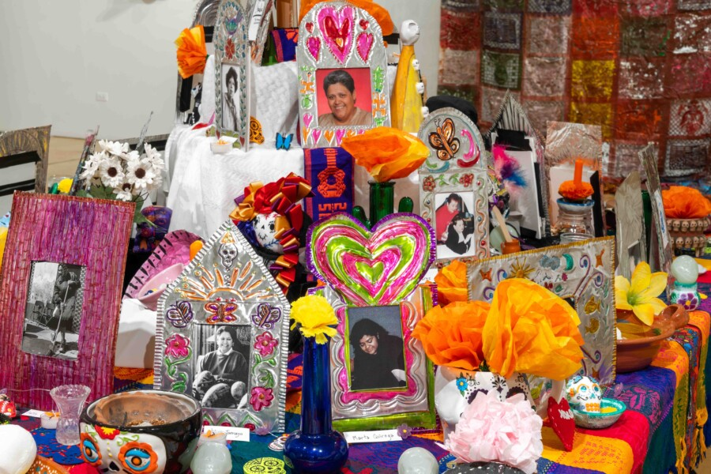

Hojalata Workshop
Learn how to make your own hojalata that you get to keep! Hojalatas are colorful, ornamented tin sheets fashioned into ornate frames, ornaments, and works of art using cutting, folding, embossing, and painting techniques. Pros Arts Studio members Elvia Rodriguez Ochoa and Rosalie Mancera lead this hands-on workshop. Ochoa and Mancera guide you through creating your own hojalata to take home, while also sharing the history and cultural importance of this traditional Mexican folk art that originated in the 16th century. Hojalatas can be found in the central Ofrenda in our current exhibition, Imagination Doctors. They honor Pros Arts members and other loved ones on the Ofrenda. Hojalatas are often made for important events such as Día de Los Muertos to celebrate and honor Mexican art and culture.
ACCESS INFORMATION: This program is free and open to the public. For questions and access accommodations, email gallery400engagement@gmail.com.
ABOUT
Elvia Rodriguez Ochoa is an interdisciplinary artist with experience in: teaching intergenerational groups, working as a curator and administrator, and collaborating in a variety of settings. Active in the city of Chicago for thirty years, Elvia continually seeks to challenge the notion that only certain individuals can participate in the arts by making programs that are accessible in a variety of ways. Their prints have been exhibited nationally and internationally. Elvia considers the greater southwest side of Chicago as their home base. Raised in a variety of neighborhoods, they began exploring the arts while in elementary school and chose to follow this interest in high school and college eventually earning both a BA and MA in the arts. Their practice is community centered with the goal of welcoming participants of all levels. They have worked in a variety of non profit organizations over the past 30 years and have recently taken on the leadership at Chicago Community Arts Studio.
Rosalia Mancera is a mother, grandmother, and a pillar of the Pilsen community with a distinguished 37-year career in the Chicago Public Schools.Her legacy as an educator is defined by 19 years as a bilingual teacher and 16 years at Galileo Scholastic Academy. A lifelong advocate for the arts, Rosalia established a landmark partnership with Pros Arts in 1979—beginning with walking field trips to their original studio at St. Procopius. In collaboration with Jean Parisi, a consortium of schools was developed to bridge the gap between the classroom and the studio, successfully integrating arts-based learning directly into the curriculum. As a member of CASA General Brotherhood of Workers, she traveled to Cuba in 1978 alongside Rudy Lozano to attend the 11th World Festival of Youth and Students. As a board member of Mujeres Latinas en Acción, she collaborated with Director Linda Coronado and Southwest Women Working Together to establish Chicago’s first bilingual women’s shelter, The Rainbow House/Arco iris in Little Village. Her commitment to environmental justice was instrumental in the successful, decade-long community campaign with the Pilsen Alliance that resulted in the 2012 closure of the Fisk Generating Station. Today, she continues to serve as a dedicated advocate for the community she has called home and supported for over four decades.